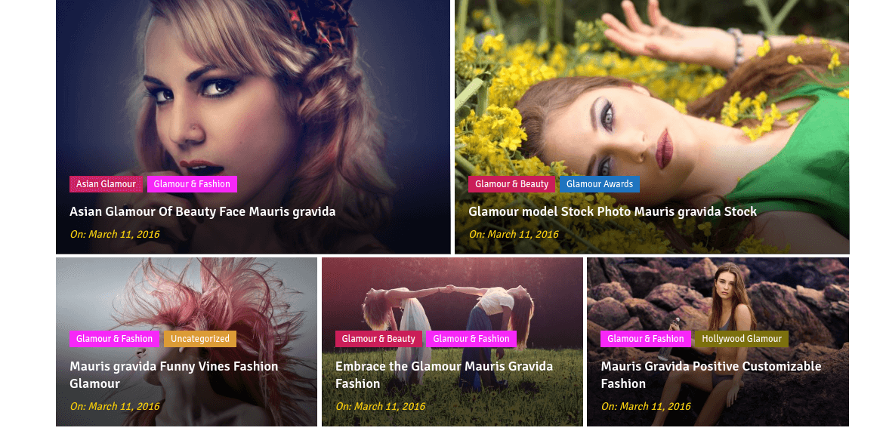
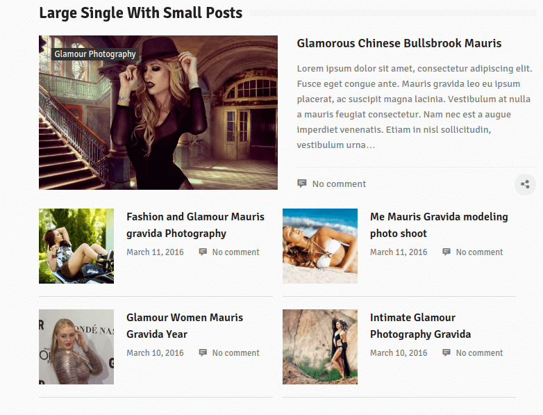
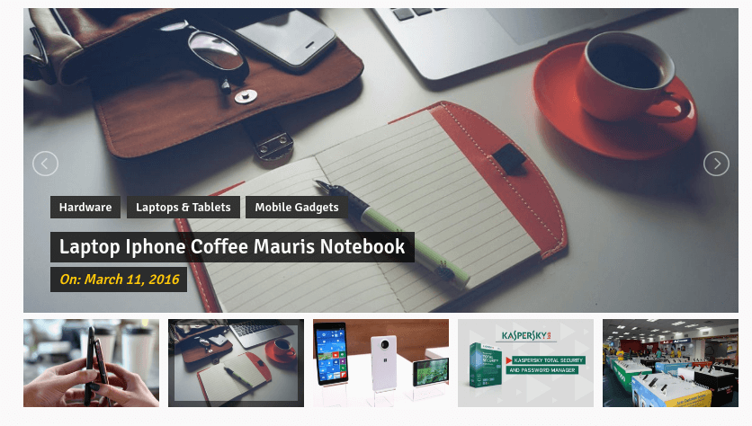
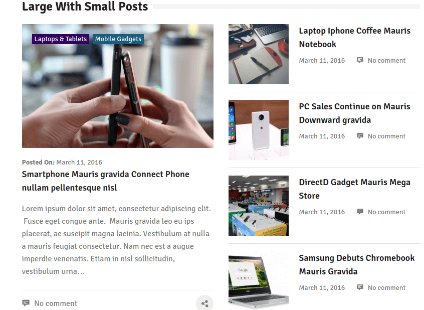
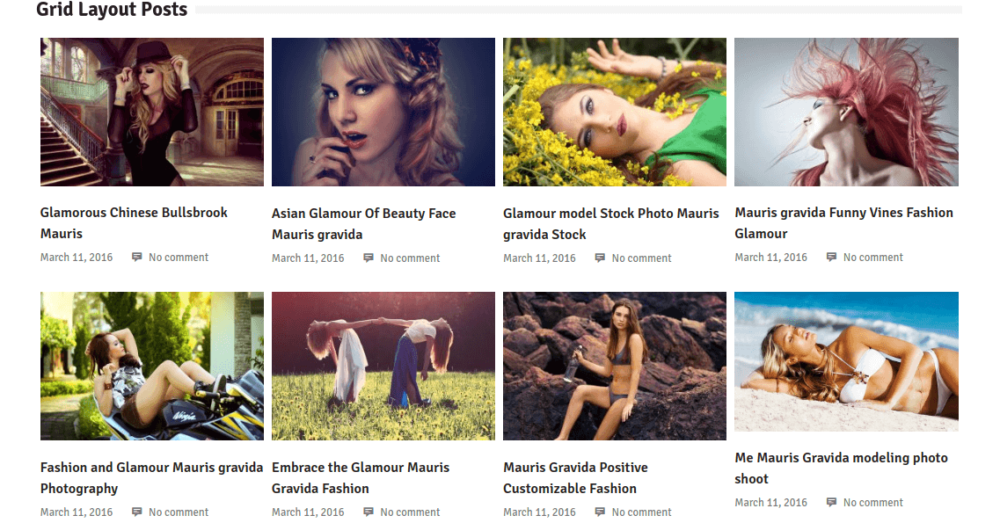

EditorialMag
- Created: 09/03/2017
- Latest Update: 09/03/2017
- by: SparkleThemes
- email: support@sparklewpthemes.com

Theme Installation
There are two methods to install EditorialMag theme. You may either upload the zipped theme file using the WordPress theme installer (Recommended), or you can upload the unzipped theme folder via FTP (Advanced).
Method 1 ( Recommended) : Install Using the WordPress Theme Installer
- Log into your WordPress site and open the Administration Panel.
- Go to Appearance > Themes in the WordPress Dashboard.
- Click on the Add New button.
- Search for the EditorialMag
- Select the EditorialMag theme
- Click Install Now

Method 2: Install Using File Transfer Protocol (FTP)
- Unzip “editorialmag.zip” file on your computer.
- Login using FTP client to access your host web server.
- Locate the wp-content folder in your WordPress install files.
- Upload the un-zipped EditorialMag folder into the: wp-content/themes folder.
Activate the theme
- Log in to the WordPress Administration Panel.
- Go to Appearance > Themes in the WordPress menu
- Hover over the theme thumbnail and click the Activate button.
Installing Plugins
To install a plugin in your WordPress admin panel and follow the following steps.
Plugin Installing Method
- Log into your WordPress site and opens the Administration Panel.
- Click Navigate to Plugins > Add New in the WordPress Dashboard.
- Search for the name of the plugin you wish to install which will return a list of potential plugins.
- Click Details to read more about a plugin.
- Click “Install Now” if you wish to install the plugin.
- It may ask if you are sure, and you may proceed. The installation will commence once you confirm to proceed.
- After the plugin is downloaded. Go to Plugins>Installed Plugins. Click “Activate Plugin” to make it available for use.
Recommended Plugins : We recommend you to download the following plugins when necessary:
- Regenerate Thumnails by Alex Mills (Viper007Bond) (If you have existing content, this will help you update your image thumbnails sizes.)
- WooCommerce by woocommerce.com, by: Automattic (The most customizable eCommerce platform for building your online siness. Get started today for free.)
- Contact Form 7 by: Takayuki Miyoshi (Simple and easy plugin to create forms)

General Settings
Logo/Site Title/Favicon (To set up Site Identity)
- Go to Appearance> Customize > General Settings > Site Identity
- Click Select logo by clicking Select Logo.
- Upload and select the desired image.
- Enter the Site Title and Tagline
- Check Display Header Text for the Site title and Tagline to appear on your homepage.
- Click Select Image under Site Icon
- Upload and select the desired image. (The Site Icon/ favicon is used as a browser and app icon for your site. The recommended Site Icon size is 512*512 pixels.)
- Click Save & Publish.
Header Image
- Go to Appearance > Customize > General Settings > Header Image
- Upload Image for header Image. The recommended image size is 1000 x 250 pixels.
Background Image
- Go to Appearance > Customize > General Settings > Background Image
- Add image for your site background image
Theme Colors Settings
Colors
- Go to Appearance > Customize > Theme Colors Settings > Colors
- Choose and change desired color for header text
- Choose and change desired theme background color
Category Color Settings
You can change colors for each and every category you like
- Go to Appearance > Customize > Theme Colors Settings > Category Color Settings
- Select and Change Color for the category as you wish
Breaking News Settings
Breaking News Section
- Go to Appearance > Customize > Breaking News Settings
- Enable or disable breaking news section
- Choose category for breaking news
Configure HomePage
EditorialMag Provides a "Home Page" template for your home page. Please follow these steps to configure your home page with "home page" template.
HomePage Setting
- Log into your WordPress site and open the Administration Panel.
- Go to Dashboard > Pages > Add New
- Enter the Page Title for the Page. You do not require to enter anything in the content section for creating a home page.
- Select the Home Page Template from the Page Attributes section.
- Click Publish
Configuring the front Page display setting
- Log into your WordPress site and opens the Administration Panel.
- Go to Appearance > Customize > Static Front Page.
- Select A static page under Front Page displays.
- Click Save & Publish.
Note : Remember that EditorialMag themes is fully base on Widget so first configer home page using widgets.
Large With Grid Posts

Configure: Large With Grid Posts
- Log into your WordPress site and opens the Administration Panel.
- Go to Dashboard > Appearance > Widgets
- Drag and drop the widget "Emag Large With Grid Posts" to "Home 1-Full Width Section"
- Click Save > Publish.
Large Single With Small Posts

Configure: Large Single With Small Posts
- Log into your WordPress site and opens the Administration Panel.
- Go to Dashboard > Appearance > Widgets
- Drag and drop the widget "Emag Large Single & Small Posts" to "Home 2- 3/1 Main Block Section"
- Click Save > Publish.
EMag Slider Posts

Configure: EMag Slider Posts
- Log into your WordPress site and opens the Administration Panel.
- Go to Dashboard > Appearance > Widgets
- Drag and drop the widget "EMag Slider Posts" to "Home 2- 3/1 Main Block Section"
- Click Save > Publish.
Large With Small Posts

Configure: Large With Small Posts
- Log into your WordPress site and opens the Administration Panel.
- Go to Dashboard > Appearance > Widgets
- Drag and drop the widget "EMag Large With Small Posts" to "Home 2- 3/1 Main Block Section"
- Click Save > Publish.
Grid Layout Posts

Configure: Grid Layout Posts
- Log into your WordPress site and opens the Administration Panel.
- Go to Dashboard > Appearance > Widgets
- Drag and drop the widget "EMag Grid Posts" to "Home 3- Full Width Section"
- Click Save > Publish.
Header Ads Area
This theme supports header ads you can add your banner image for Ads. The recommended image for ads is 728 x 80 pixels.
Configure: Header Ads
- Log into your WordPress site and opens the Administration Panel.
- Go to Dashboard > Appearance > Widgets
- Drag and drop the widget "Image" to "Home Header ADS Section"
- Click Save > Publish.
Design Layout Settings
You can change sidebar layouts for Archive Posts, Single Posts and Single Page as your requirement from here
- Go to Appearance > Customize > Design Layout Settings
- Navigate to desired settings and make changes as you need
Note: This theme also has metabox option for each page and post for sidebar options. You can assign sidebars independently for each page and posts
This option allow to choose the
- Left Sidebar
- Right Sidebar
- Without Sidebar(Full Width)
Social Media Links Settings